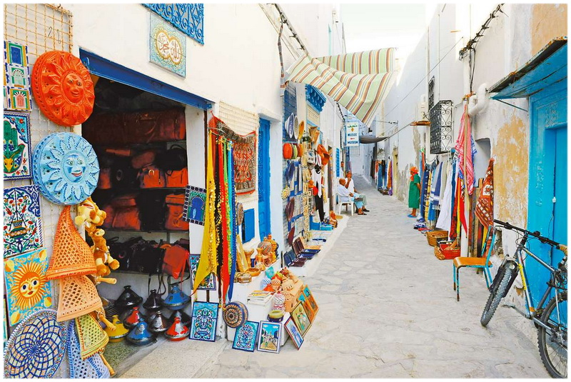

Coastal Town with Historical Significance
Monastir, known for its impressive amphitheater and rich history, is a must-visit destination for travelers interested in culture and heritage.
Wander through the charming alleys of Monastir's medina. Discover traditional crafts, local markets, and historic landmarks.
Explore the Ribat, a massive fortress built in the 8th century. It served as a defensive structure and a place for religious contemplation. Climb to the top for panoramic views of the city and the sea.